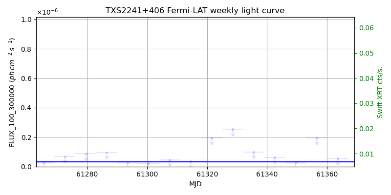
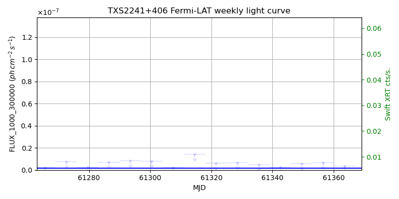

LAT Lightcurve site: https://fermi.gsfc.nasa.gov/ssc/data/access/lat/msl_lc/source/TXS_2241p406
Swift site: https://www.swift.psu.edu/monitoring/source.php?source=TXS2241+406
NED: Query
Time of last update of this page: UT: 2026-11-28 16:29 (MJD: 61372.687)
| Property | Value |
|---|---|
| R.A. | 22:44:12.72 |
| Dec. | 40:57:14.4 |
| z | 1.171 |
| 3FGL SpectrumType | PowerLaw |
| 3FGL PL Index | 2.29 |
| 3FGL Flux_100_300000 | 3.22e-08 1 / (s cm2) |
| 3FGL Flux_1000_300000 | 1.65e-09 1 / (s cm2) |
| 3FGL Flux >200 GeV | 1.78e-12 1 / (s cm2) |
| 3FGL Extrap. Crab >200 GeV | 0.01 |
| 3FGL Flux After EBL Absorption >200GeV | 1.20e-14 1 / (s cm2) |
| 3FGL EBL Crab Fraction >200GeV | 0.00 |
| MJD | dMJD | Flux | dFlux | Frac3FGL | FracCrab>200GeV | EBLFracCrab>200GeV |
|---|---|---|---|---|---|---|
| 61367.50 | 0.50 | 6.27e-08 | 0.00e+00 | 0.00 | 0.00 | 0.00 |
| 61368.50 | 0.50 | 2.64e-07 | 0.00e+00 | 0.00 | 0.00 | 0.00 |
| 61369.50 | 0.50 | 3.25e-07 | 0.00e+00 | 0.00 | 0.00 | 0.00 |
| 61370.50 | 0.50 | 6.88e-08 | 0.00e+00 | 0.00 | 0.00 | 0.00 |
| 61371.50 | 0.50 | 2.74e-07 | 0.00e+00 | 0.00 | 0.00 | 0.00 |

| MJD | dMJD | Flux | dFlux | Frac3FGL | FracCrab>200GeV | EBLFracCrab>200GeV |
|---|---|---|---|---|---|---|
| 61335.50 | 3.50 | 9.91e-08 | 0.00e+00 | 0.00 | 0.00 | 0.00 |
| 61342.50 | 3.50 | 6.29e-08 | 0.00e+00 | 0.00 | 0.00 | 0.00 |
| 61349.50 | 3.50 | 2.43e-08 | 0.00e+00 | 0.00 | 0.00 | 0.00 |
| 61356.50 | 3.50 | 1.94e-07 | 0.00e+00 | 0.00 | 0.00 | 0.00 |
| 61363.50 | 3.50 | 5.41e-08 | 0.00e+00 | 0.00 | 0.00 | 0.00 |

| MJD | dMJD | Flux | dFlux | Frac3FGL | FracCrab>200GeV | EBLFracCrab>200GeV |
|---|---|---|---|---|---|---|
| 61367.50 | 0.50 | 1.63e-08 | 0.00e+00 | 0.00 | 0.00 | 0.00 |
| 61368.50 | 0.50 | 1.18e-08 | 0.00e+00 | 0.00 | 0.00 | 0.00 |
| 61369.50 | 0.50 | 9.99e-09 | 0.00e+00 | 0.00 | 0.00 | 0.00 |
| 61370.50 | 0.50 | 1.39e-08 | 0.00e+00 | 0.00 | 0.00 | 0.00 |
| 61371.50 | 0.50 | 9.33e-09 | 0.00e+00 | 0.00 | 0.00 | 0.00 |

| MJD | dMJD | Flux | dFlux | Frac3FGL | FracCrab>200GeV | EBLFracCrab>200GeV |
|---|---|---|---|---|---|---|
| 61335.50 | 3.50 | 4.69e-09 | 0.00e+00 | 0.00 | 0.00 | 0.00 |
| 61342.50 | 3.50 | 2.59e-09 | 0.00e+00 | 0.00 | 0.00 | 0.00 |
| 61349.50 | 3.50 | 5.81e-09 | 0.00e+00 | 0.00 | 0.00 | 0.00 |
| 61356.50 | 3.50 | 6.80e-09 | 0.00e+00 | 0.00 | 0.00 | 0.00 |
| 61363.50 | 3.50 | 3.36e-09 | 0.00e+00 | 0.00 | 0.00 | 0.00 |
--------------------------------------------------------- Using user-supplied coords: 22:44:12.72 40:57:14.4 2000 --------------------------------------------------------- FLWO UT night of: 2026-11-29 Local Sid. @ Midnight: 04:08 Sunset (-15.0) (local, UT): 18:31 01:31 Sunrise (-15.0) (local, UT): 05:53 12:53 Moonrise (local, UT): 21:57 04:57 Moonset (local, UT): Moon phase: 0.72 --------------------------------------------------------- AzTime LSID UT Obj_el Obj_az Mn_el Mn_az Sep. --------------------------------------------------------- 18:31 22:39 01:31 80.5 7.0 -32.9 32.1 114.2 19:01 23:09 02:01 79.4 334.6 -29.4 38.9 114.4 19:31 23:39 02:31 75.6 314.8 -25.4 45.0 114.7 20:01 00:09 03:01 70.7 305.1 -21.0 50.6 114.9 20:31 00:39 03:31 65.3 300.5 -16.2 55.6 115.1 21:01 01:09 04:01 59.7 298.4 -11.1 60.2 115.3 21:31 01:39 04:31 54.1 297.7 -5.4 64.5 115.5 22:01 02:09 05:01 48.4 297.9 0.4 68.5 115.7 22:31 02:39 05:31 42.8 298.8 5.8 72.2 115.8 23:01 03:10 06:01 37.2 300.1 11.6 75.8 116.0 23:31 03:40 06:31 31.7 301.8 17.5 79.4 116.2 00:01 04:10 07:01 26.3 303.8 23.6 82.9 116.3 00:31 04:40 07:31 21.1 306.2 29.7 86.5 116.5 01:01 05:10 08:01 16.0 308.8 35.8 90.3 116.7 01:31 05:40 08:31 11.2 311.8 42.0 94.4 116.8 02:01 06:10 09:01 6.6 315.0 48.1 99.1 117.0 02:31 06:40 09:31 2.3 318.6 54.2 104.7 117.1 03:01 07:10 10:01 -1.1 322.6 60.1 111.7 117.3 03:31 07:40 10:31 -5.4 326.9 65.6 121.1 117.4 04:01 08:10 11:01 -9.0 331.6 70.5 134.7 117.6 04:31 08:40 11:31 -11.8 336.6 74.0 154.7 117.7 05:01 09:11 12:01 -14.0 341.9 75.2 181.1 117.9 05:31 09:41 12:31 -15.7 347.5 73.6 206.8 118.1 05:53 10:02 12:53 -16.6 351.7 71.0 221.2 118.2 --------------------------------------------------------- Dark hours >55 deg.: 2.92 srcstart (UT): 2026-11-29 01:31 srcend (UT): 2026-11-29 04:26